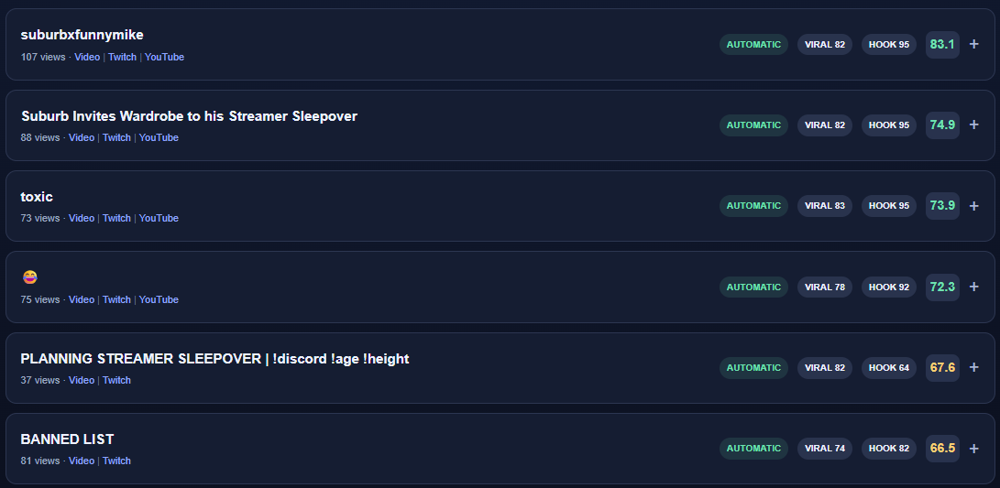

Stream as usual
Stay focused on the broadcast. ClipPilot keeps track of the moments viewers respond to, including clips that surface after you go offline.
Built for faster editor handoffs
ClipPilot turns every broadcast into a clear, prioritized handoff. Your editor gets the source clips, context, and strongest moments in one place—so they can start cutting instead of spending hours searching.

Give every stream a clean path from broadcast to finished content.
After every stream
Your team receives a dependable starting point after every broadcast, whether an editor is preparing the next upload or your channel publishes Shorts automatically.
Stay focused on the broadcast. ClipPilot keeps track of the moments viewers respond to, including clips that surface after you go offline.
Your editor sees a clear order of priority, useful context, and the original source—without opening every clip to find out what happened.
The finished handoff arrives organized by streamer and stream date, ready to review, edit, and turn into content.
A clear place to start
No hour-long scavenger hunt. Every clip arrives with a simple editing priority and enough context to understand the moment before pressing play.
Your team still makes the creative decisions. ClipPilot gives them a better first cut of the footage, so their time goes into editing instead of searching.
See how priorities help editors →Who it helps
ClipPilot gives creators and editors the same clear handoff after every stream, making faster turnaround easier to repeat as output grows.
Creator teams
End every stream with a clean handoff waiting for the team, without making the creator sort clips or manage files late into the night.
Agencies
Give every account the same dependable handoff while keeping each creator’s clips, decisions, and deliveries separate.
streamer_name / 2026-08-06
A handoff your editor can use
Every delivery brings the source clips, original Twitch links, recommended titles, useful context, and review decisions together in one easy-to-read file.
+ Editors can match every note directly to its clip
+ The strongest moments are easy to spot first
+ Rejected and lower-priority clips remain available when needed
Plans
Choose the level of coverage your team needs and receive the same clear, dependable handoff after every stream.
One streamer · one complete handoff
$0to get started
Best fit
One streamer + editor team
$49/mo
Up to three streamers
$99/mo
A human decision before delivery or posting
$99monthly minimum
+ $0.60 per reviewed clip
Need one delivery?
Receive the source clips and a clear handoff without starting a monthly plan.
FAQ
ClipPilot fits around the way your creator and editors already work, while removing the slowest part of the handoff.
Each moment receives a practical editing priority based on how quickly it gets to the point, how well it can hold attention, and how much outside context it needs. It helps your editor choose a starting point without pretending to guarantee virality.
No. It protects their time. Your editors still shape the story, pacing, captions, style, and final publish decision; they simply begin with the right footage already in front of them.
Yes. Human review can hold every clip until it receives an approval or rejection. Only the moments you approve move forward.
Yes. ClipPilot can prepare and publish qualifying Shorts for channels handling content on their own, while editor-led teams receive organized source clips and a complete handoff.
Get started
Tell us about your channel and team. We will match you with the right delivery, whether you want a free sample, ongoing editor handoffs, or human-reviewed clips.